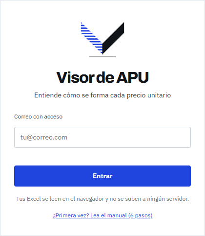
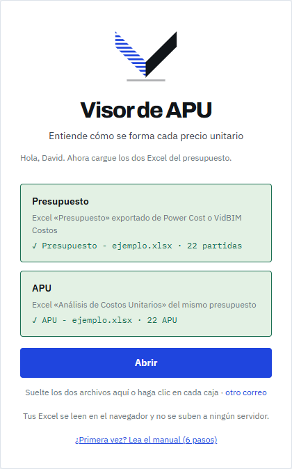
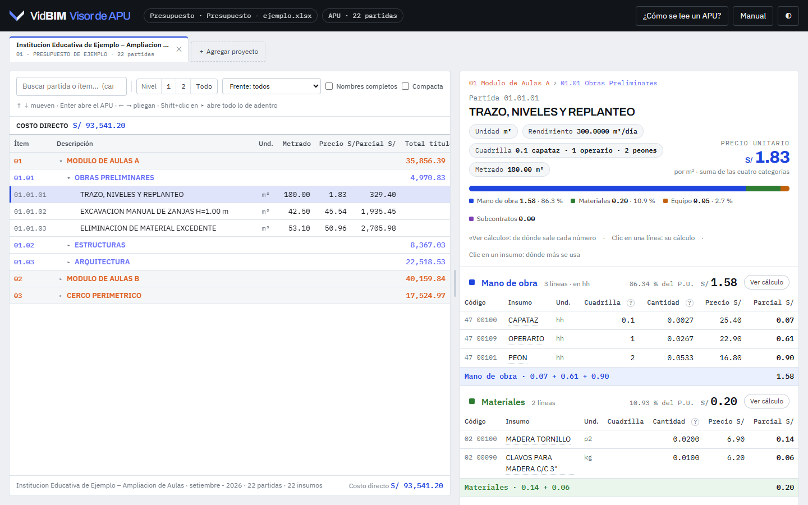
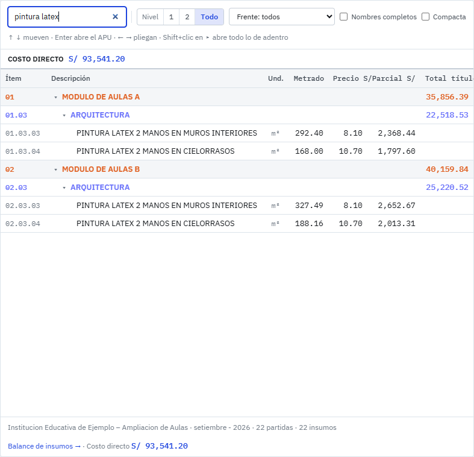
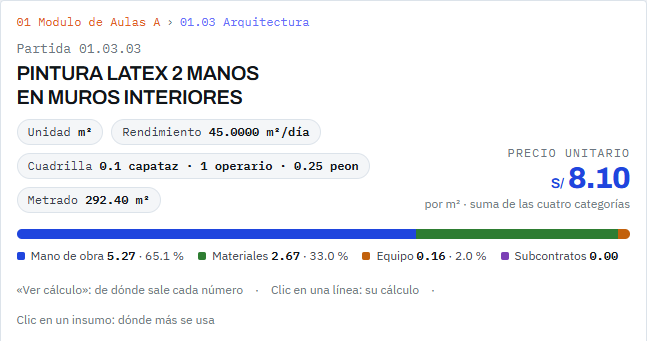
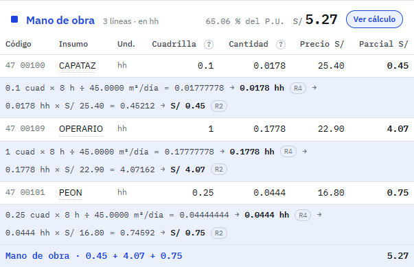
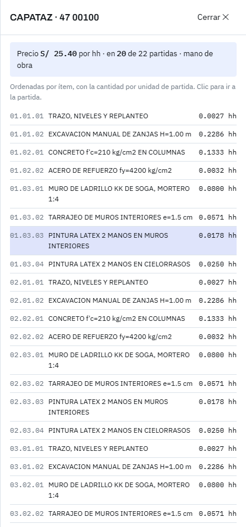
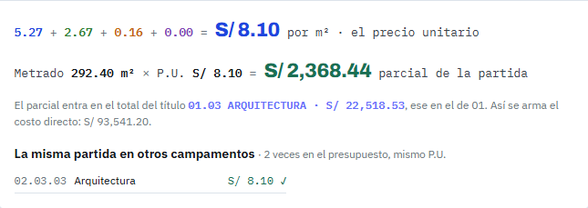

Manual del Visor de APU
Revise un presupuesto partida por partida y vea de dónde sale cada precio unitario: cuadrilla, rendimiento, cantidades y redondeos. En seis pasos.
- 1 · Entrar
- 2 · Cargar los Excel
- 3 · Moverse en el presupuesto
- 4 · Leer el APU
- 5 · Ver el cálculo
- 6 · Comparar e investigar
Entrar con su correo
Abra el visor, escriba su correo y pulse Entrar. Si sale «Este correo no tiene acceso», pídaselo a David. El navegador recuerda su correo: la próxima vez va directo a cargar los archivos.

Cargar los dos Excel
Arrastre los dos archivos a la tarjeta, o haga clic en una caja para elegirlos. No importa el orden: el visor reconoce cuál es el presupuesto y cuál el de APU. Cuando las dos cajas se ponen en verde, pulse Abrir.
- Son los Excel de exportación (hoja SP1), tal como salen de Power Cost o de VidBIM Costos.
- Si una caja dice que el archivo no se reconoce, revise que no sea otro reporte (por ejemplo, la lista de insumos).
- Para cambiar de presupuesto después, use Otros archivos ⇄ en la cabecera.

Moverse en el presupuesto
A la izquierda está el presupuesto, como en la ventana de VidBIM Costos: títulos en el color de su nivel, partidas con metrado, precio y parcial, y el costo directo abajo. Al elegir una partida, su APU aparece a la derecha.
- Buscar: escriba parte del nombre o del ítem (
pintura latex,01.03); filtra al instante. - Plegar: clic en el triángulo de un título, o Expandir todo / Contraer.
- Teclado: ↑ ↓ pasan de fila, ← → pliegan o suben al título, Enter lleva al APU.


Leer el APU
Arriba va la partida con su unidad, rendimiento (lo que hace la cuadrilla en un día), cuadrilla y metrado. A la derecha, en azul, el precio unitario. La barra de colores dice de qué está hecho ese precio:
Debajo, una tabla por categoría (siempre en ese orden) con código, insumo, unidad, cuadrilla, cantidad, precio y parcial. Cada categoría suma sus parciales y la suma de las cuatro es el P.U. El botón ¿Cómo se lee un APU? explica cada columna.

Ver el cálculo de cada línea
El cálculo va apagado para que la tabla quede limpia. Hay dos formas de verlo:
- Ver cálculo en el encabezado de una categoría: muestra la cuenta de todas sus líneas. El visor lo recuerda para las siguientes partidas.
- Clic en una línea: solo la cuenta de esa línea. Otro clic la esconde.
Cómo se lee una cuenta de mano de obra:
0.1 cuad × 8 h ÷ 45.0000 m²/día = 0.01777778 → 0.0178 hh R40.0178 hh × S/ 25.40 = 0.45212 → S/ 0.45 R2
- R4: la cantidad se redondea a 4 decimales. R2: el parcial, a 2 (soles). Solo aparecen cuando el redondeo cambia el número.
- Las herramientas manuales son un %MO:
3 % × S/ 5.27 (mano de obra) = 0.1581 → S/ 0.16. - Si una cuenta no cierra con lo que trae el Excel, sale un aviso en rojo.

Comparar e investigar
Dónde se usa un insumo: clic en su nombre (por ejemplo CAPATAZ). Se abre un panel con su precio, en cuántas partidas está y la cantidad en cada una. Clic en una partida de la lista para ir a ella.
Cierre del APU: al final, la suma de categorías da el P.U., y metrado × P.U. da el parcial de la partida, que sube a su título hasta el costo directo.
La misma partida en otros frentes de trabajo: lista las partidas con el mismo nombre y unidad en los demás frentes de trabajo (los títulos de segundo nivel, como módulos o sectores). Si alguna tiene otro P.U., sale en ámbar con la diferencia: es lo primero que conviene revisar.


Las capturas son de un presupuesto de ejemplo inventado (Institución educativa de ejemplo); los precios no son reales.